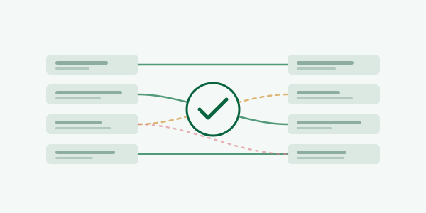
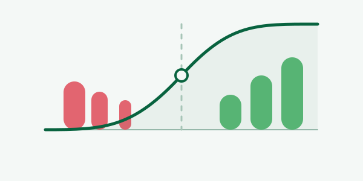
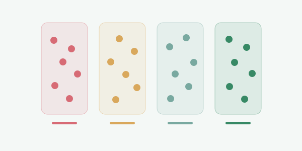
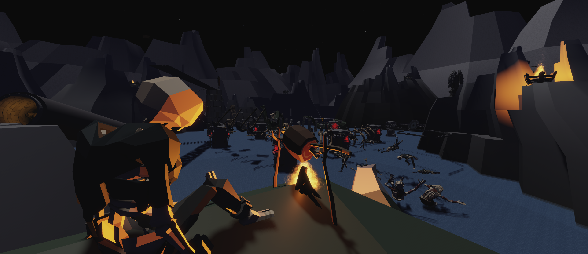

Data systems and modelling
Engineering how data is captured, historised, transformed and modelled so business logic and analytical outputs remain dependable.
Data engineering · software design · applied ML
I’m a Data Engineer who designs and improves the systems behind the business—from core transformation architecture and modelling to high-performance processing and applied customer science.
Core expertise
I work beyond individual pipelines: shaping the architecture, development practices and reusable capabilities that make an entire data function faster, safer and more effective.
Engineering how data is captured, historised, transformed and modelled so business logic and analytical outputs remain dependable.
Designing the modular class systems and shared transformation foundations used to build and operate data products consistently.
Reworking algorithms and execution patterns to make demanding workloads practical, including orders-of-magnitude performance improvements.
Building customer science that moves from data and modelling into targeting, operational action and measurable commercial outcomes.
Career
Data engineering responsibility spanning architecture, modelling, performance, delivery standards and business-facing science.
Quickline Communications
AMP Automation
Selected engineering work
The strongest work does more than complete a requirement: it establishes a better pattern, removes a constraint or creates a capability the business did not have before.
Internal data engineering system
I created the transformation framework and evolved it into a modular internal system. Its class-based architecture gives ingestion, transformation, history, business logic and analytical modelling a shared foundation—supported by the Git flow, CI/CD and release practices I introduced.
Architecture and engineering ownership
Distributed processing · orders-of-magnitude acceleration
Co-developed a distributed matching algorithm that transformed a previously impractical search problem into a production-scale workflow. Candidate reduction, ranking and execution optimisation reduced multi-hour benchmarks to minutes while maintaining dependable matching quality.
Production-scale matching with reliable results
Customer outcome modelling
Developed modelling used by operational teams to identify patterns associated with negative customer outcomes and support earlier, preventative action.
Business-facing science
Applied machine learning · commercial pilot
Led the technical ML lifecycle from ingestion and dataset construction through feature engineering, model development, scoring and evaluation. The resulting scores supported a targeted commercial pilot and materially improved prospect selection over the existing baseline.
Models translated into commercial targetingHistorical data · accelerated backfills
Designed a reusable approach for rebuilding historical outputs efficiently without repeatedly recomputing the full history. It reduced hours-long backfills to minutes and established a repeatable pattern for future workloads.
Reusable high-performance history patternUniversity honours project
A full-stack application for analysing household energy use, estimating device-level consumption and presenting cost-saving recommendations.
Project media to be added
1 / 5Game project
A multiplayer obstacle-course game built in Roblox, with Lua scripting for obstacles, persistent player data and player controllers. Carefully arranged environments and detailed 3D models create a cohesive low-poly world.
Five-scene project galleryEngineering approach
I combine data engineering, software thinking and business context to find the underlying constraint and create a better way forward. That can mean learning an unfamiliar domain quickly, rethinking an inherited approach or turning a one-off requirement into reusable capability. Innovation matters when it makes delivery faster, systems stronger and decisions better.
Find the real problem. Look beyond the initial request to understand the constraint, the people using the result and the business outcome it must support.
Adapt with technical judgement. Move confidently across data, software and applied modelling, learning quickly and choosing the level of engineering the problem actually needs.
Create a better approach. Challenge inherited assumptions, investigate bottlenecks and redesign the solution when the standard route is not good enough.
Leave lasting leverage. Turn successful delivery into reusable patterns, stronger foundations and capability that makes the next problem easier to solve.
Education
University of Hull
First Class Honours
Academic highlights
John Leggott College
D* D*